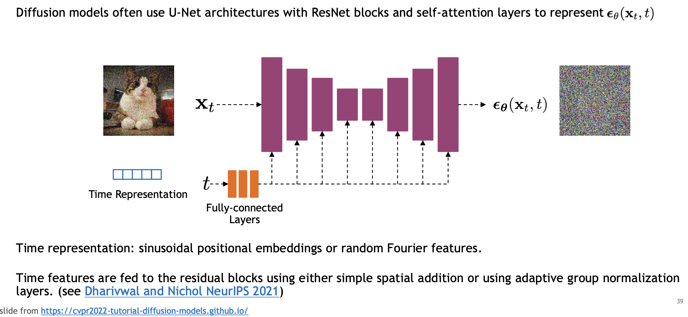

Generative Image Models
2026-04-14
Overview of generative image modeling
Introduction

Examples

Deep Generative modeling
- With the rise of deep learning, a new family of generative methods has emerged, called deep generative models (DGMs)
- These models combine generative models and deep neural networks.
- Popular DGMs include:
- Variational Auto-Encoders (VAEs),
- Generative adversarial networks (GANs), and
- Auto-regressive
- Shallow examples: (AR, VAR, ARIMA) models
- Diffision models
- Over the past years, there has been a trend to build very large deep generative models.
- For example, GPT-3, and its precursor GPT-2, are auto-regressive neural language models that contain billions of parameters, BigGAN and VQ-VAE
- Transfer learning: (TL) is a research problem in machine learning (ML) that focuses on storing knowledge gained while solving one problem and applying it to a different but related problem.
What Is Generative Modeling?
- Definition: Learning to model the underlying distribution of data
- Objective: Generate new samples that resemble training data
- Formally: Learn \(p_{\theta}(x)\) such that \(x \sim p_{\text{data}} \approx p_{\theta}(x)\)
Types of Generative Models
- Explicit Density Models
- Directly model \(p(x)\)
- Examples: PixelCNN, Autoregressive models, Flow-based models
- Implicit Models
- Learn to generate samples without explicitly modeling \(p(x)\)
- Examples: GANs (Generative Adversarial Networks)
- Latent Variable Models
- Model data using hidden variables \(z\)
- Examples: VAEs (Variational Autoencoders), Diffusion Models
Core Architectures
- GANs: Adversarial training between generator and discriminator
- VAEs: Probabilistic latent space modeling with encoder-decoder structure
- Autoregressive Models: Predict pixels sequentially (e.g., PixelCNN)
- Flow-based Models: Invertible mappings with tractable likelihoods
- Diffusion Models: Iteratively denoise a sample from noise
Example: Variational Autoencoder (VAE)
- Encoder: \(x \rightarrow z\) (approximate posterior)
- Decoder: \(z \rightarrow x\) (generative model)
- Objective: Maximize ELBO (Evidence Lower Bound)
\[ \log p(x) \geq \mathbb{E}_{q(z|x)}[\log p(x|z)] - D_{KL}(q(z|x) || p(z)) \]
VAE example: Face generation

Example: GAN Architecture
- Generator: Maps noise \(z\) → image \(x\)
- Discriminator: Classifies real vs fake images
- Training Goal: Minimax game
- Mini-max is an optimization strategy where one player maximizes an objective while the other minimizes it.
- In GANs, it’s used to model an adversarial game:
GAN mini-max loss function
\[ \min _G \max _D \mathbb{E}_{x \sim p_{\text {data }}}[\log D(x)]+\mathbb{E}_{z \sim p(z)}[\log (1-D(G(z)))] \]
- Discriminator \(D\) tries to maximize the probability of correctly classifying real vs. fake images.
- Generator \(G\) tries to minimize the discriminator’s ability to tell fakes from real.
This results in a two-player zero-sum game where \(G\) improves by generating increasingly realistic images.
GAN example: Face generation

Applications of Generative Image Models
- Art and Design: AI-generated art, style transfer
- Synthetic Data: Data augmentation for training ML models
- Medical Imaging: Filling missing scans, generating variations
- Image Editing: Inpainting, resolution enhancement
- Creative Tools: Text-to-image synthesis (e.g., DALL·E, MidJourney)
Discriminative vs Generative Models

Example: Diffusion Models
A diffusion model generates images by reversing a gradual noising process. It starts with pure noise and learns to denoise step-by-step to produce realistic images.
- Forward process: Adds Gaussian noise over many steps.
- Reverse process: A neural network learns to remove noise at each step.
It models the data distribution by learning the score (gradient of the log-density) or the noise directly.
Popular diffusion models in image generation:
DDPM (Denoising Diffusion Probabilistic Models)
The foundational model introducing the diffusion framework for image generation.Improved DDPM
Enhances sampling speed and training stability.Score-Based Generative Models (SGM)
Use score matching to guide reverse diffusion.Latent Diffusion Models (LDM)
Run diffusion in a lower-dimensional latent space for efficiency. Used in Stable Diffusion.Stable Diffusion
An open-source, text-to-image diffusion model built on LDM.Imagen (by Google)
High-quality text-to-image synthesis using large transformer-based text encoders.DALL·E 2 (by OpenAI)
Combines diffusion with CLIP embeddings for text-guided image generation.MidJourney & Adobe Firefly
Proprietary systems using variations of diffusion for creative image generation.
Diffusion models
Motivation
- Previous GAN models generated images from noise or from conditional inputs (e.g., image class).
- These models could produce full images (e.g., faces) directly from random noise.
- A new approach: generate images incrementally—starting with contours, then adding details over time.
- Diffusion models enable this gradual generation process.
- They also allow image generation from text input.
- Conceptually, diffusion models simulate the gradual dispersion of pixel values over time.
How diffusion models work
- Forward process: Gradually add noise to an image over many timesteps until it becomes pure noise
- Reverse process: Start from noisy image and iteratively predict and remove noise step-by-step
- Model architecture: Modified U-Net with attention and ResNet blocks
- Time embedding: Model receives both noisy image and its timestep as input
- Skip connections: Used to retain spatial features, similar to standard U-Net
- Noise prediction: At each step, model predicts noise in the image
- Image refinement: Subtract predicted noise, add slight noise for stability, repeat for previous timestep
- Noise schedule: Carefully designed curve adds minimal noise early and more at later steps for better learning of image structure
Big picture

Forward Diffusion Process
- Start with clean image
- Add Gaussian noise incrementally over timesteps
- Each step: image becomes progressively noisier
- Final step: image approaches pure noise
- Noise schedule controls how much noise is added at each step

Diffusion Kernel

Implementation

U-Net Block

Noise schedule
- Noise schedule controls how much noise is added at each step

Aside: Stochastic differential equation framework

Generative Adversarial networks (GANs)
Overview
- The concept of a GAN was developed by Ian Goodfellow and his colleagues in June 2014
- In the GAN architecture, two neural networks (the generator and the discriminator) compete with each other in the form of a zero-sum game
- One agent’s gain is another agent’s loss.
- This technique learns to generate new data with the same statistics and many realistic characteristics inherent in the training set.
Big Picture summary
- Generative Models: GANs are a type of generative model that create new data instances resembling a given dataset.
- Adversarial Competition: Consists of two neural networks, the Generator and the Discriminator, competing against each other.
- Generator: Attempts to produce realistic data to fool the Discriminator.
- Discriminator: Evaluates data and distinguishes between real and generated data.
- Training Process: The Generator improves by learning to create more convincing data, while the Discriminator enhances its ability to detect fake data.
- Goal: Achieve a balance where the Generator produces data indistinguishable from real data by the Discriminator.
Motivation for GANs
- Realistic Image Generation: GANs (Generative Adversarial Networks) are designed to create images that are indistinguishable from real ones.
- Adversarial Training: Utilizes two neural networks, a generator and a discriminator, competing against each other to improve image quality.
- Creative Applications: Enables new possibilities in art, design, and entertainment by generating novel and realistic visuals.
- Data Augmentation: Provides synthetic data for training other models, enhancing performance in tasks with limited real data.
- Research and Development: Advances understanding of deep learning and generative models, pushing the boundaries of AI capabilities.
Example
- For example, a GAN trained on photographs can generate new photographs that look at least superficially similar to those in the training set

Real-World GAN Applications
- Image Synthesis:
- GANs generate realistic images from random noise.
- Used in art creation, video game design, and virtual reality.
- Example: DeepArt and Artbreeder platforms.
- Super-Resolution:
- Enhances image quality by increasing resolution.
- Applied in medical imaging for clearer scans.
- Used in satellite imagery for detailed earth observation.
- Style Transfer:
- Alters images to adopt the style of another.
- Popular in photo editing apps like Prisma.
- Data Augmentation:
- Generates diverse datasets for training AI models.
- Useful in fields with limited data, like healthcare.
- Text-to-Image Generation:
- Converts textual descriptions into images.
- Utilized in advertising and content creation.
- Video Generation:
- Creates realistic video sequences.
- Applied in film industry for special effects.
Fundamentals of GAN Architecture
General idea
- The GAN paradigm is based on the “indirect” training through the discriminator
- another neural network that can tell how “realistic” the input seems, which itself is also being updated dynamically.
- This means that the generator is not trained to minimize the distance to a specific image, but rather to fool the discriminator.
- This enables the model to learn in an unsupervised manner.
Core components

GAN Architecture Overview
Generative Adversarial Networks (GANs) consist of two neural networks: the Generator and the Discriminator.
Generator:
- Takes random noise as input.
- Aims to produce data resembling the real dataset.
- Tries to “fool” the Discriminator by generating realistic data samples.
Discriminator:
- Receives both real and generated data samples.
- Learns to distinguish between real and fake data.
- Outputs a probability indicating the likelihood of a sample being real.
Training Process:
- The Generator and Discriminator are trained simultaneously.
- The Generator improves by minimizing the Discriminator’s ability to differentiate real from fake.
- The Discriminator improves by maximizing its accuracy in distinguishing real from fake.
Objective Functions:
- Generator’s loss: $ G D V(D, G) = {x p{}(x)}[D(x)] + _{z p_z(z)}[(1 - D(G(z)))] $
- Discriminator’s goal is to maximize this value, while the Generator’s goal is to minimize it.
Example:
- Consider a simple 1D data distribution.
- Generator creates samples from noise, e.g., \(z \sim \mathcal{N}(0, 1)\).
- Discriminator evaluates samples, adjusting weights to improve classification.
GAN Structure Overview
- Generative Adversarial Networks (GANs) consist of two main components:
- Generator (G): Creates fake data from random noise.
- Discriminator (D): Distinguishes between real and fake data.
- Interaction Process:
- Generator Input: Random noise vector \(z\).
- Generator Output: Fake data \(G(z)\).
- Discriminator Input: Real data \(x\) and fake data \(G(z)\).
- Discriminator Output: Probability \(D(x)\) for real data, \(D(G(z))\) for fake data.
- Objective:
- Generator: Minimize \(\log(1 - D(G(z)))\).
- Discriminator: Maximize \(\log D(x) + \log(1 - D(G(z)))\).
- Training Process:
- Alternating updates to \(G\) and \(D\) to improve performance.
- Example:
- Noise Vector: \(z = [0.1, 0.2]\).
- Fake Data: \(G(z) = [0.5, 0.7]\).
- Discriminator Output: \(D(x) = 0.9\), \(D(G(z)) = 0.3\).
Common GAN Loss Functions
- Adversarial Loss:
- Used to train Generative Adversarial Networks (GANs).
- Comprises two models: Generator (\(G\)) and Discriminator (\(D\)).
- \(D\) aims to distinguish real from fake data, while \(G\) tries to fool \(D\).
- Loss for \(D\): \[ L_D = -\mathbb{E}_{x \sim p_{\text{data}}}[\log D(x)] - \mathbb{E}_{z \sim p_z}[\log(1 - D(G(z)))] \]
- Loss for \(G\): \[ L_G = -\mathbb{E}_{z \sim p_z}[\log D(G(z))] \]
- Binary Cross-Entropy (BCE) Loss:
- Measures the difference between two probability distributions.
- Commonly used in binary classification tasks.
- Formula: \[ L_{\text{BCE}} = -\frac{1}{N} \sum_{i=1}^{N} [y_i \log(\hat{y}_i) + (1-y_i) \log(1-\hat{y}_i)] \]
- In GANs, used to compute \(L_D\) and \(L_G\).
- Example:
- Suppose \(D(x) = 0.8\) for real data and \(D(G(z)) = 0.3\) for generated data.
- \(L_D = -[\log(0.8) + \log(1-0.3)]\)
- \(L_G = -\log(0.3)\)
Closer look at loss function
In the GAN mini-max loss function, \(D(x)\) represents the discriminator’s output, which estimates the probability that input \(x\) is a real image (from the training data), rather than a fake image generated by the generator.
- \(D(x) \in[0,1]\)
- \(D(x) \approx 1 \rightarrow\) discriminator thinks \(x\) is real
- \(D(x) \approx 0 \rightarrow\) discriminator thinks \(x\) is fake
In the loss:
\[ \min _G \max _D \mathbb{E}_{x \sim p_{\text {data }}}[\log D(x)]+\mathbb{E}_{z \sim p(z)}[\log (1-D(G(z)))] \]
- \(D(x)\) encourages real images to be classified as real.
- \(D(G(z))\) pushes the discriminator to recognize fakes, while the generator tries to fool it.
Alternating GAN Training
- Training Process:
- Generator: Aims to produce realistic data to fool the discriminator.
- Discriminator: Aims to distinguish between real and generated data.
- Alternating Steps:
- Discriminator Update:
- Train on real data \(x\) and generated data \(G(z)\).
- Loss: \(L_D = -\mathbb{E}[\log D(x)] - \mathbb{E}[\log(1 - D(G(z)))]\).
- Update discriminator weights to minimize \(L_D\).
- Generator Update:
- Train to maximize the probability of the discriminator being mistaken.
- Loss: \(L_G = -\mathbb{E}[\log D(G(z))]\).
- Update generator weights to minimize \(L_G\).
- Discriminator Update:
- Example:
- Real Data: \(x = 1\)
- Noise Input: \(z = 0.5\)
- Generated Data: \(G(z) = 0.8\)
- Discriminator Output: \(D(x) = 0.9\), \(D(G(z)) = 0.4\)
- Loss Calculation:
- \(L_D = -\log(0.9) - \log(1 - 0.4)\)
- \(L_G = -\log(0.4)\)
- Iterative Process: Repeat updates until convergence.
Stabilizing GAN Training
- Batch Normalization:
- Normalizes activations in each layer.
- Reduces internal covariate shift.
- Helps stabilize training by maintaining consistent input distributions.
- Label Smoothing:
- Adjusts target labels slightly (e.g., 1 to 0.9).
- Reduces overconfidence in discriminator.
- Encourages smoother gradients and better generalization.
- Example:
- For a real label of 1, use 0.9.
- For a fake label of 0, use 0.1.
- Benefits:
- Improves convergence.
- Reduces mode collapse.
- Enhances GAN performance and stability.
GAN Training Challenges
- Mode Collapse:
- Occurs when the generator produces limited variety of outputs.
- Results in lack of diversity in generated samples.
- Often due to the generator finding a few modes that fool the discriminator.
- Training Instability:
- GANs can be sensitive to hyperparameters and architecture choices.
- Training may oscillate or fail to converge.
- Balancing the generator and discriminator is crucial.
- Gradient Issues:
- Vanishing gradients can hinder generator updates.
- Discriminator may become too strong, leading to poor generator learning.
- Careful tuning and techniques like gradient penalty can help.
- Mitigation Strategies:
- Use techniques like Wasserstein loss to improve stability.
- Implement regularization methods to prevent mode collapse.
- Adjust learning rates and network architectures for balance.
GAN Evaluation Metrics
- Inception Score (IS):
- Measures quality and diversity of generated images.
- Uses a pre-trained Inception model to classify images.
- High score indicates diverse and realistic images.
- Formula: \(IS = \exp(\mathbb{E}_x[D_{KL}(p(y|x) || p(y))])\)
- \(p(y|x)\): Conditional label distribution.
- \(p(y)\): Marginal label distribution.
- Fréchet Inception Distance (FID):
- Compares real and generated image distributions.
- Uses features from a pre-trained Inception model.
- Lower FID indicates closer match to real data.
- Formula: \[
FID = ||\mu_r - \mu_g||^2 + \text{Tr}(\Sigma_r + \Sigma_g - 2(\Sigma_r\Sigma_g)^{1/2})
\]
- \(\mu_r, \mu_g\): Means of real and generated features.
- \(\Sigma_r, \Sigma_g\): Covariances of real and generated features.
- Example:
- If IS = 9 and FID = 5, the GAN generates high-quality, diverse images close to real data.
Types of GANS
Variants of GANs
- GAN Instability:
- GANs (Generative Adversarial Networks) often suffer from instability during training.
- Issues include mode collapse, non-convergence, and sensitivity to hyperparameters.
- DCGAN (Deep Convolutional GAN):
- Introduces convolutional layers for both generator and discriminator.
- Uses batch normalization and ReLU activation to stabilize training.
- Example: Generates realistic images from random noise.
- Wasserstein GAN (WGAN):
- Addresses instability by using the Wasserstein distance as a loss function.
- Improves convergence and reduces mode collapse.
- Key modification: Replaces discriminator with a “critic” that estimates Wasserstein distance.
- Example:
- Consider a simple 1D data distribution.
- WGAN critic loss: \[ L = \mathbb{E}_{x \sim \mathbb{P}_r}[f(x)] - \mathbb{E}_{z \sim \mathbb{P}_g}[f(g(z))] \]
- Ensures smoother training dynamics.
- Conclusion:
- Variants like DCGAN and WGAN enhance GAN training stability.
- They are widely used in applications requiring high-quality generative models.
Types of GANs-1


Types of GANs-2


Diagram

Additional details
Loss function-1

Loss function-2

Tricks
- Training GANs and tuning GAN implementations is notoriously difficult
- They require a significant amount of manual tuning and “tweaking” to work properly
- The following are various recommended “tricks” from the textbook

Pro & Cons

Recommended reading

Code example: GANs
- See “shared/week-12/GAN” for a Keras GAN example

References
- https://en.wikipedia.org/wiki/Kernel_density_estimation
- https://en.wikipedia.org/wiki/Generative_adversarial_network
- https://towardsdatascience.com/the-mostly-complete-chart-of-neural-networks-explained-3fb6f2367464
- https://en.wikipedia.org/wiki/Generative_model
- https://towardsdatascience.com/understanding-variational-autoencoders-vaes-f70510919f73
- https://www.youtube.com/watch?v=8L11aMN5KY8
- https://www.youtube.com/watch?v=O8LAi6ksC80